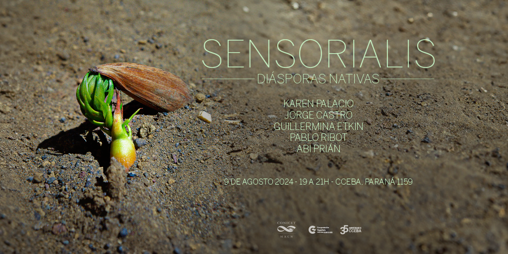

In August 2024, I was able to carry out several actions thanks to Sensorialis, an AV concert cycle that proposes intertwining scientific curiosity with artistic curiosity. In this context, the edition I participated in was called Native Diasporas, and it was held jointly with the Bernardino Rivadavia Natural Sciences Museum. As part of the proposal, we got to know the various botanical collections of that museum, and we were able to speak directly with the research groups that study, conserve, and nurture them. Then, we held an AV concert at the Cultural Center of Spain in Buenos Aires, in CABA, Argentina.

During the visit, in addition to interacting with various scientific teams and learning about their work, we sought to make something from these collections and that visit dialogue with our artistic production/research lines, so that it would be present in some way in the concert.
From that experience, many things kept resonating with me - among them, the paleobotanical collection with plants and fossilized fruits from millions of years ago and from different parts of Argentina, and the botanical collection of the Malvinas Islands with specimens collected at the beginning of the 20th century.
I thought about how distant our own (what we share and makes us) can be or feel.
There are relationships of contiguity between what is near and what is near. They have their own, but I'm more interested in distant interactions. A glimpse of how to capture them is, for example, what changed the landscape of generative Artificial Intelligence back in 2019 with the Attention mechanism.
After the visit, I thought about the relationships between the near and the far, and the role of these collections, science, and art in that. The relationships between the parts and the whole, and in creating closed/"complete" work and other openly partial work.
Livecoding itself can be experienced as a very open reading/writing experience, and that's what I seek the most.
> Livecoding is the practice of improvising code live, where the code text is shown as it is built. I mostly do visual livecoding, so I show the code that synthesizes images and transforms videos.
Since I started livecoding, I've been exploring its potential to demand processing from the people participating. This involves giving them moments with more clues: simple code that, if read and interpreted as natural language text, can directly relate to the images they generate... All of this to then increase the pace and complexity of the changes and the proposal.
This is how I proceed with a livecoding performance, reading people's faces to see what kind of attention they show. If there are people interested in understanding the mechanism, the game is more fun, and it also becomes more demanding for me - because it forces me to look for the simplest code that achieves the visual transformation I want to keep them in the loop, it forces me to give good names to functions and variables, and to keep a clean environment without dead code. That's how I think of the performance as building circuits.
Part of this pursuit is the continuous construction of algorithmic instruments to add layers to that process.
I'm interested in weaving discourses. Going a little further, we can also weave new languages to express and even create the compiler itself. I consider it an honor to suggest relationships between the parts and the whole, the small and the large, the everyday and what is constructed as historical. For that, I made Cóndor Loop.
Cóndor Loop
There are relationships that interest me to weave.
For example: Laura Richardson in 2023 talking about lithium, oil, and fresh water from Argentina. There is a direct relationship between that 2023 discourse, and the fact that Argentinians can only touch and know the plants of the Malvinas by visiting the botanical collections of museums.
I was interested in creating a system-instrument that brings these relationships to the forefront and also lends itself to rhythmic visual-conceptual games of concealment/revelation.
For this, I activated photographic records I took during the guided tour of the various botanical collections that are research fields at the Bernardino Rivadavia Argentine Museum of Natural Sciences, to build a small dataset. I also used the San Francisco Computing Node in Córdoba to carry out all the necessary processing for the system.
This is the methodology I created - some parts are automated, others are more manual. I used Python for everything.
Let's see the process step by step.
Let's think about the process for one photo, since this is then repeated equivalently for all the photos I took at the Museum.
Let’s say a photo,
For example:
This photo is fragmented into 24 random cuts. In this process, the original positions of these cuts are saved.
Each cut is passed through a model that takes an image and returns a video using Artificial Intelligence. Behind the scenes, this model seeks to give motion to the image probabilistically. For each image, there are 24 videos to create, corresponding to the 24 pieces or cuts made earlier. To give you an idea of computation times, a 5-second video at 512x512 pixel resolution takes the Computing Node ~2 minutes to complete. So animating 24 videos (the equivalent in my system to an "image") takes almost 50 minutes (if everything goes well). In summary, a "complete video" (i.e., made up of 24 video-pieces-sheets) that lasts 5 seconds takes an hour to synthesize. This part of the process was incredibly slow as it involved back-and-forths to find parameters of the process that I liked, and, even with access to scientific computing, I had to automate parts of the interaction with the model programmatically - which was not easy since this type of use is not documented online.
Example of a video-piece processed by AI - what would be a little leaf from the cluster:
Each video-piece is associated with the original image and has saved the positions to which they correspond.
The Condor looper has a video set sequencer: It takes a directory of video-pieces and knows how to execute the 24 videos simultaneously, which, when positioned in the original coordinates, reassemble the original image fragmentarily (or a part, depending on how the cut was made).
In Cóndor, a “video” is made up of videos. Most of the cuts themselves contain little information. To understand what was originally represented, you need to see the 24 videos simultaneously.
Cóndor allows me to choose whether to show one video-piece at a time, a couple, or all at once, completing the video-cluster. It also allows me to mix video-pieces that belong to different video-clusters. I can also configure how often to switch to the next set of videos, to more finely control the rhythmic feel.
Generative Loopers
I was thinking about clusters of videos because I was considering semantic relationships between videos and what has been an obsession with crown fire mode for years: a semantic looper. I must have implemented at least 10 complete loopers in various languages over the past three years. I've already made several in Python, several in JavaScript, some in C++, a couple in Rust. All of them are open-source and can be found on my GitHub.
We know that a video is a sequence of images. If a video is a cluster of "images" connected semantically, then the concept that binds them is a pod. It may be that there are also semantic connections between several videos, such as a theme related to a concept, in which case we would have the stem of a plant. If I could extract that "theme" or "concept" that connects them, then I could operate directly between concepts to form sentences, paragraphs, texts—in an abstract sense—and reconstruct the entire plant, generatively, by connecting conceptual transformations with the time variable. Complexify even the time variable and think about the times of plants, or the circular times of nature. Furthermore, if I could measure the strength of semantic relationships—or the "degrees of separation"—I could think about modeling different morphologies. What would be a tree versus a shrub, a flower versus an inflorescence?
For now, all this is a dream. My dream looper.
In a performance with a looper—whichever one I have—I’m doing it, but the processing is done by me in my biological hardware. I haven't automated this part yet as it’s a pretty tough technical challenge.
I like it because it’s about relating video<->text<->image and raising a level of abstraction that allows for narration in a visual performance, but also enables the creation of metalanguages and meta(*)languages (in a runway process).
I also explored this topic in tree—an instrument based on Natural Language Processing for visual performance with the band Marmotas Dreams, which premiered at the Centro de Arte Sonoro (CASo).
Since I think of what I do when I perform visuals as live editing, I always seek ways to operate semantically—even if the semantic relationships have been encoded with rules still, or have been pre-calculated—in this case I pre-arranged sequences of video-clusters that, in my opinion, when played one after the other, construct a broader mental image than one could have if only a fragment was seen.
This action corresponds with my meta-project What Does Argentina Dream?. Within this project is Lenguaje Frontera, which won production support from cceba last year and will be exhibited this year at the Recoleta. There’s also the performance I did earlier this year at Underclub called Plan Condor AV. There’s also Trabajo, which won the first prize in the Itaú Prize for Art and AI category.


 There are relationships that interest me to weave.
There are relationships that interest me to weave.


 In Cóndor, a “video” is made up of videos. Most of the cuts themselves contain little information. To understand what was originally represented, you need to see the 24 videos simultaneously.
In Cóndor, a “video” is made up of videos. Most of the cuts themselves contain little information. To understand what was originally represented, you need to see the 24 videos simultaneously.